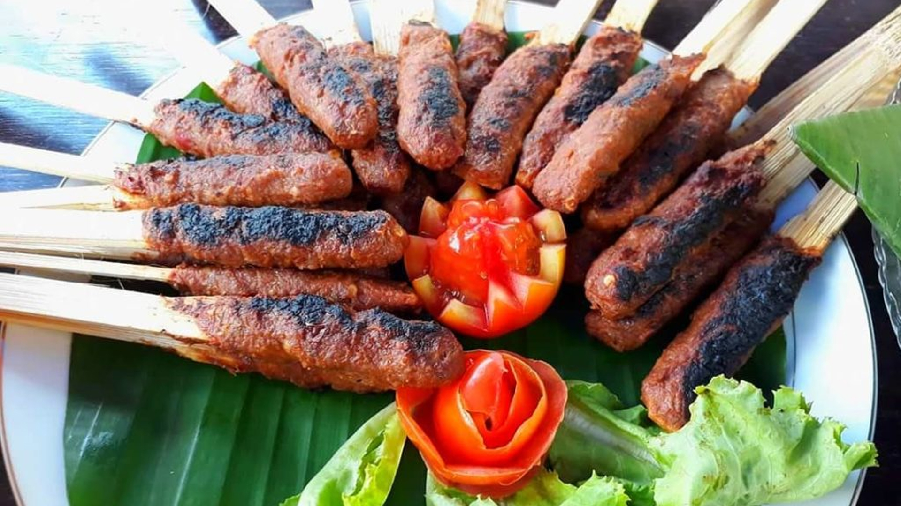

Bagaimana cara membuat rawon

Bahan bahan untuk membuat sate pusut:
- 150 gr daging sapi giling
- 250 gr(1 butir) kelapa parut setengah tua
- 2 lembar daun jeruk, iris tipis
- 1 bungkus royco sapi@10 gr (sesuai selera)
- 1/2 sdt garam
- 20 buah tusuk sate
- minyak goreng secukupnya
Bumbu halus:
- 4 siung Bawang Merah@50gr
- 3 siung Bawang Putih
- 1 buah Cabai Merah besar, buang bijinya
- 10 buah cabe rawit merah (jika tidak suka pedas boleh dilewati)
- 35 butir merica/secukupnya
- 1/2 sdt Ketumbar
Cara Memasak:
- Campurkan kelapa parut dg bumbu halus, lalu tambahkan royko,garam dan daun jeruk aduk rata, koreksi rasa jika perlu.
- Tambahkan daging giling, aduk rata.
- Ambil sejuput atau 1-2 sdm adonan, rekatkan pada tusuk sate sambil ditekan2 agar adonan menempel. lalukan hingga adonan habis.
- Tuang minyak goreng kedalam panci, lalu panaskan hingga mendidih.
- Goreng sate pada minyak panas hingga matang (indikator matang: keemasan atau kecoklatan, sesuai selera). pastikan sate terendam minyak semua. Angkat tiriskan<./li>
- Sajikan sate pusut dg nasi hangat dan pelecing kangkung atau oseng kacang panjang.
Mudah, bukan...?!
Selamat mencoba!
Resep by https://cookpad.com/id/resep/729396-sate-pusut-khas-lombok